Project 3: Social Extended Reality (XR) for Local Community
By Lam Yeung Kong Sunny
Empathy
In the empathy process, our group examined potential concerns when the community takes part in second-hand furniture events. We conducted a survey using Google Forms with the following questions:
Have you ever bought or sold second-hand furniture in Hong Kong? (Single selection)
What platform(s) did you use for your last second-hand furniture transaction? (Multi answer)
What challenges did you face during that transaction? (Short answer)
How important is it for you to visualize furniture in your space before buying? (Short selection)
Would you use an app that lets you preview second-hand furniture in your home using your phone camera (AR) ? (Single Selection)
If you were selling, would you be willing to scan your furniture using your phone to create a 3D model? (Single Selection)
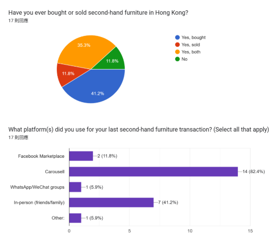
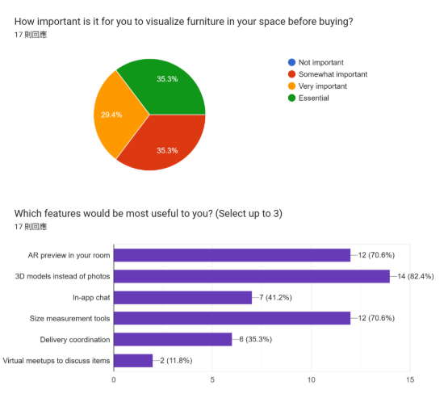
After gathering data from 17 people, we found that almost 90% had bought or sold second-hand furniture. Most used online trading platforms such as Carousell followed by face-to-face transactions (around 41%). Major concerns included the condition of the item, the size of transportation, mismatched specifications, and the distance to visit the store. The problems were summarized in the table below.
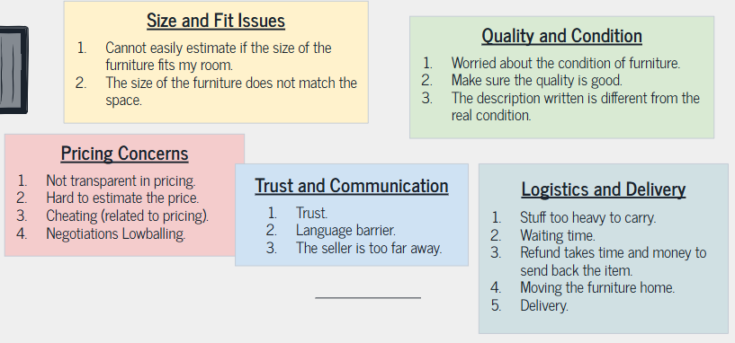
In addition, we observed a local Hong Kong shop near the Prince Edward MTR station inside Pioneer Centre. We noted that most furniture is large, which forces buyers to measure spaces—sometimes with little help from the staff.
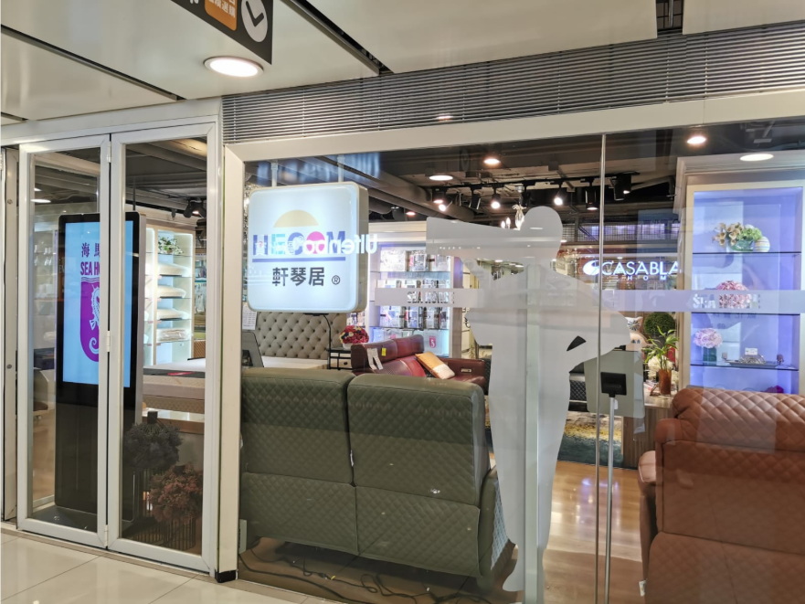
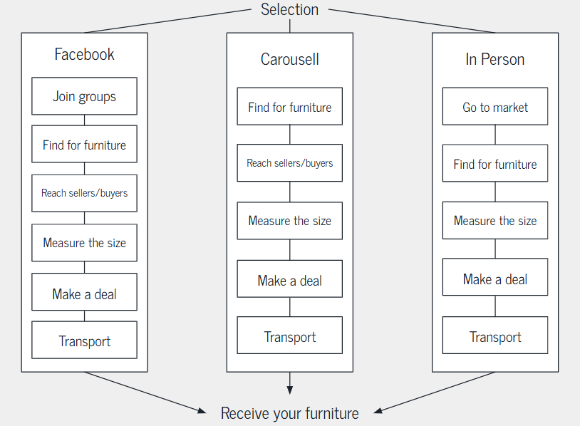
My Contribution: I sent out the survey, motivated friends to respond, hosted the shop observation, recorded details, and offered suggestions during the creation of the GOMS model.
Ideation
In the ideation phase, we created three personas to define our target users:
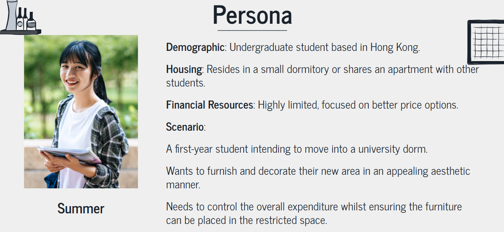
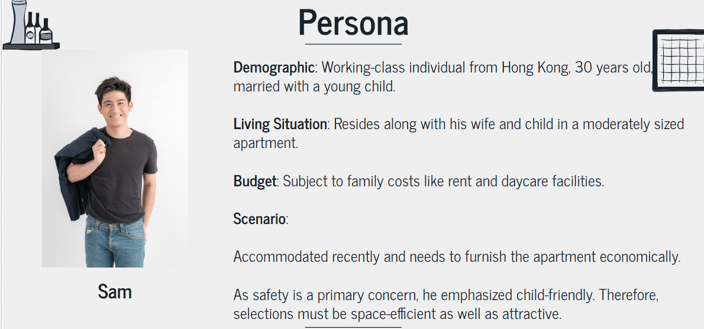
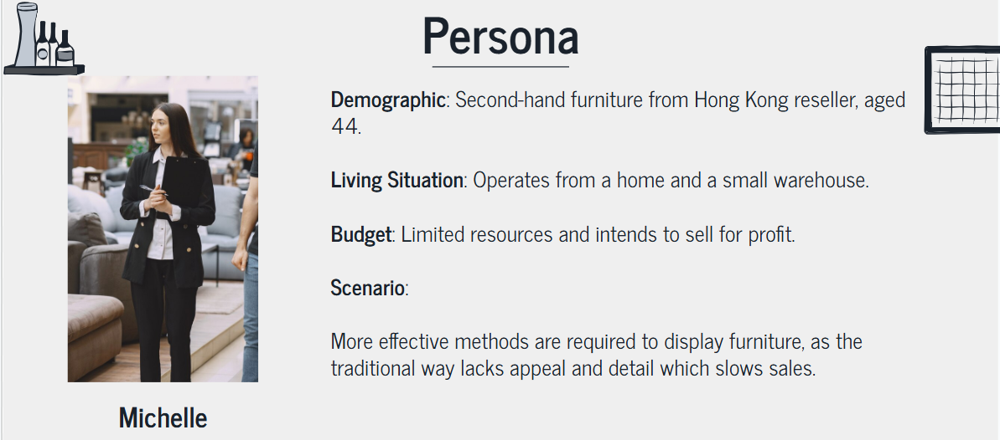
Based on these personas, we outlined our POV:
Users:
Primary User: Hong Kong residents looking to buy second-hand furniture.
Secondary User: Sellers of second-hand furniture.
Need:
Buyer: Accurate visualization of furniture without wasting time or money.
Seller: A method to present furniture using 3D models instead of just 2D photos, reducing refund requests due to mismatched sizes.
Insight: Hong Kong’s spatial constraints make both buying and selling furniture challenging.
Our brainstorming led us to map out ideas in a mindmap:
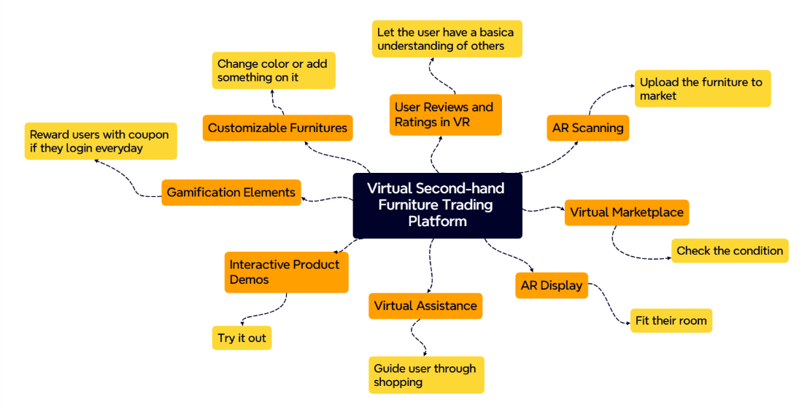
We also developed storyboard illustrations. For the existing solution, the buyer and seller steps are:
Existing Solution Storyboard
Buyer’s Steps:
Scroll online and pick a furniture item.
Measure the current space.
Confirm the size and condition with the seller.
Visit the shop and finalize the deal.
Seller’s Steps:
Take a picture of the furniture.
Measure the furniture’s size.
Post the images and details online.
Proceed with the deal as per the buyer’s steps.
For our initial solution, the steps become:
Initial Solution Storyboard
Buyer’s Steps:
Find furniture in the XR virtual market.
Place the furniture’s 3D model in their home using AR.
Check the furniture condition using the 3D scan.
Confirm the deal and set a pick-up time.
Seller’s Steps:
3D scan the furniture with a phone.
List the furniture with detailed 3D model information on the virtual market.
Negotiate and confirm the deal with the buyer.
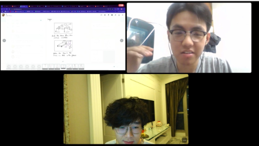
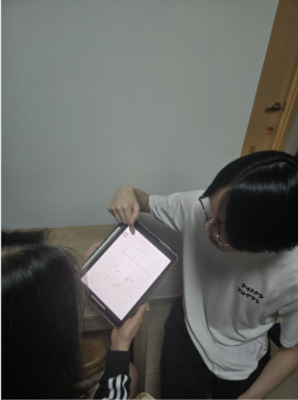
Based on feedback during speed dating, we refined our storyboard. Here is the finalized storyboard:
The prototype details include:
Scanning:
Use an AR application to 3D scan furniture by the seller.
Load and upload the details to the virtual market.
Virtual Market:
Built using Unity and a spatial toolkit.
Allows buyers to walk around, communicate with sellers, and check furniture details.
Placing:
Buyer downloads the 3D model from the virtual market.
Uses the AR application to place the furniture in their home.
If the furniture fits, the buyer finalizes the deal and arranges pick-up.
Watch the prototype demo:
My Contribution: I led the persona creation (based on feedback from the empathy stage), helped establish the POV, contributed to the mindmap and storyboard iterations, and coordinated with a friend experienced in moving house.
Usability Test
We designed a skeletal prototype to demonstrate the platform’s vital features—including furniture capture, virtual market navigation, and AR placement. Key features of the usability test include:
Prototype Type: A software mockup to simulate essential interactions.
Retrospective Think Aloud Protocol:
Three users engaged with the prototype and later reviewed video recordings of their interactions.
User feedback on usability, feature evaluations, and concerns was documented.
The test outcomes indicated:
The idea is perceived as innovative.
Significant time savings compared to visiting a store.
High overall user satisfaction.
One example of the Retrospective Think Aloud Protocol can be viewed here:
My Contribution: I participated in designing the protocol and selecting the appropriate type of prototype for the usability test.
Qualitative User Evaluation
This phase involved organizing the data from the usability test by transcribing the video recordings and applying an inductive coding approach.
Organization of Data: Video recordings were converted to text transcripts.
Coding: A self-implemented code book was developed to categorize findings.
Descriptive Analysis: A table was used to summarize the findings.
Second Order Analysis: Conclusions were induced based on the descriptive data.
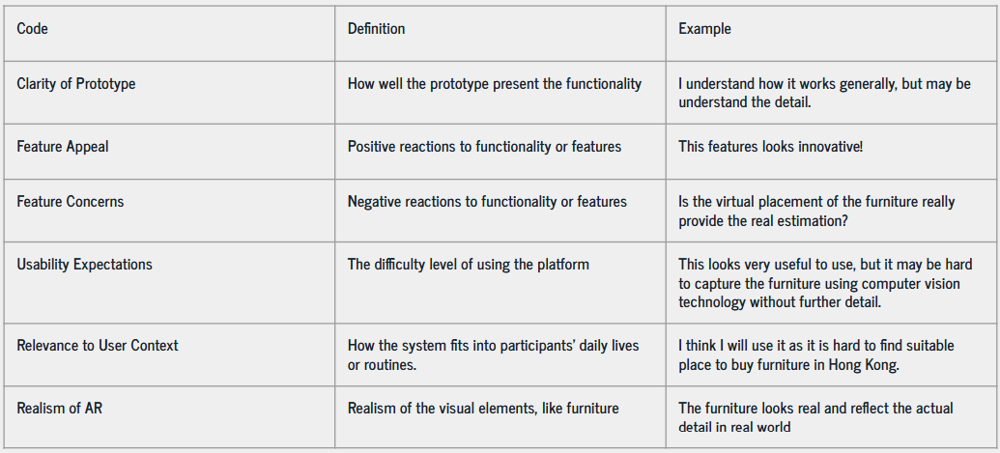
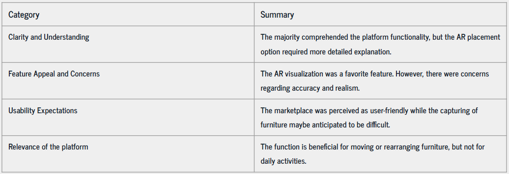
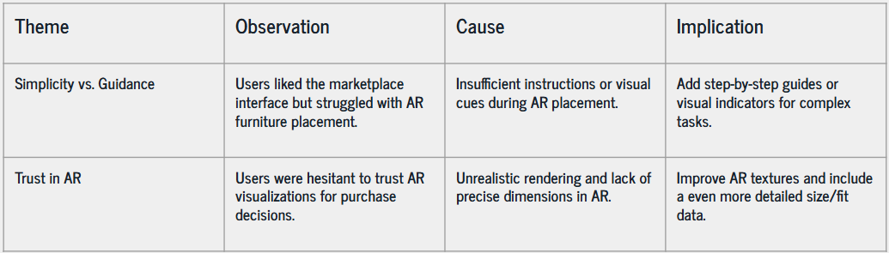
My Contribution: I led the evaluation process by coding the data and drawing conclusions to address the design deficits.
Reflection
This project has been an invaluable learning experience. The empathy stage uncovered major drawbacks in current second-hand furniture transactions, while the ideation phase allowed us to creatively integrate AR and 3D modeling into a virtual marketplace. My active involvement in user research, persona development, and usability testing has strengthened my collaborative and analytical skills.
Observing direct feedback and engaging in iterative design helped reinforce the necessity of user-centered design. The high-level evaluation further validated that innovative features—like AR furniture placement—can significantly reduce time and improve satisfaction.